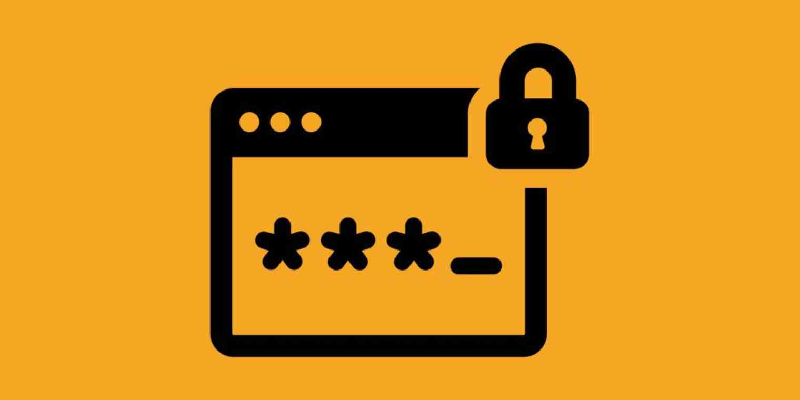
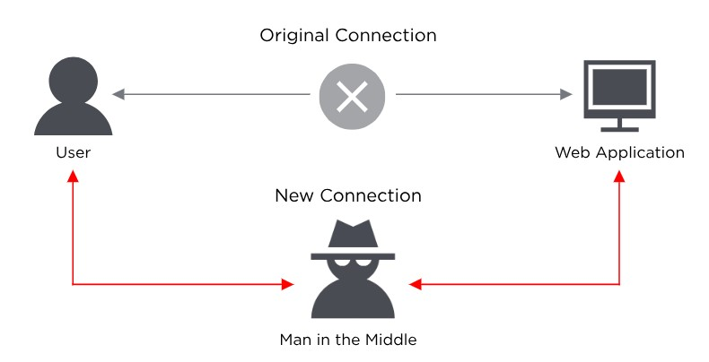

A password attack is when a hacker tries to steal your password. They may try to achieve this using methods like
phishing, man-in-the-middle, brute force, dictionary attacks, credential stuffing, and keylogging. Hackers can do
this without you even realizing it. When you realize it, it would be too late. Check out this article [insert link]
to see what you can do after you are hacked.

Phishing
Phishing is when the hacker pretends to be a trustworthy party, which can be a company or person, and sends you a
fraudulent email, message, or phone call, hoping you will reveal your personal information. They may lead you to
links like fake "reset your password" or “restore account” scenes. The email might also say that you won some sort
of contest and tell you to click a link to claim the reward. Other times, the links install malicious code on your
device. During these situations, the hacker would steal the information you put in and use it to hack your
accounts.
To avoid phishing attacks, you can check if the source sending the email, message, or phone call is legitimate. See
if the source matches up with the person or organization it claims to be. You can also double-check with the person
or organization it claims to be.
Man-in-the-middle

Another way of hacking is man-in-the-middle. This is when a hacker or compromised system is in between two
uncompromised people or systems and deciphers the information they're passing to each other. This could include
passwords, account information, messages, and other sensitive information. For example, say, in a class, Allie, Bob,
and Claire sit in this order. Allie wants to pass a note to Claire, but since Bob is in between, the note has to go
through Bob. This allows Bob to be the man-in-the-middle and read the note. Then, the note is comprised.
To counter this, you could try using a secure VPN, using strong credentials, using two-factor authentication (when
your password and something else is used to verify that it is the person who is trying to log in), or enabling
encryption on your router.
Brute Force

A brute force attack is exactly what it says. The hacker would use an automated software or tool to try all the
possible combinations for your password. They will repeat this process multiple times until they get your password
correct. This method, called trial and error, can try up to 1 billion passwords per second!
The easiest way to prevent this from happening is to use more complex passwords. This means 15+ characters, both
uppercase and lowercase, numbers, special characters, and variety. This will decrease the possibility of a
successful brute force password attack. Or, you could enable two-factor authentication, if possible. If the hacker
knows your password, he would have to go through the second factor, which could be a code sent to your phone, a
thumbprint, or a face scan. The hacker likely wouldn’t have your phone, thumbprint, or have you held hostage.
Dictionary Attack

Dictionary attacks are a type of brute force attack, but also different in some ways. This method relies on account
users picking "basic" words as their password. Instead of randomly trying possible passwords, hackers would use
“cracking dictionaries”. More sophisticated dictionary attacks use words that are more important to you, like a
birthplace, a family member’s name, or a pet's name.
To help prevent a dictionary attack, try not to use a dictionary word as a password. Be sure to add additional
numbers and special characters. Or, you could enable locking accounts after too many failed passwords are entered.
While it could be frustrating if you forget your password and your account locks you out, it’s better than to have
your password compromised. Try setting it so that it locks you out after five failed attempts.
Credential Stuffing
Credential stuffing takes advantage of accounts that were hacked, but the owner never changed their password (which
is something you shouldn’t do). Hackers would try various combinations of former usernames and passwords, hoping
that the victim hasn’t changed their password/username or that their new password/username is similar to their old
one.
To defend against this form of password attack, you could regularly change your password. The longer you use the
same password, the more likely it’ll be hacked. However, keep in mind that changing passwords too often might cause
you to not remember them. But if you are hacked, remember to change your password immediately.
Keylogging

Keylogging involves using keyloggers to track every keystroke you make and report it to the hacker. Usually, this
begins with scamming a user to download software that seems real but is actually a keylogger.
One thing you could do to prevent this from happening is to run virus scans. Use a reputable antivirus software to
scan your computer regularly. Make sure the software is trustworthy because you don’t want another malicious
software. Antivirus companies will keep records of common malware keyloggers and will flag them.
Well, what if you are already hacked? Check out
this post to learn about what you can do. Then, start
implementing the methods in this article to prevent password attacks.